OpenGL WorkThis page serves as a place to demonstrate all of the OpenGL work done by me (Asher Dykstra). All code was written in C++ despite the fact that OpenGL is a C library. A large portion of it was performed recently for a computer graphics class, but some was done independently.Homepage |
Digital Pool Hall |
|
| 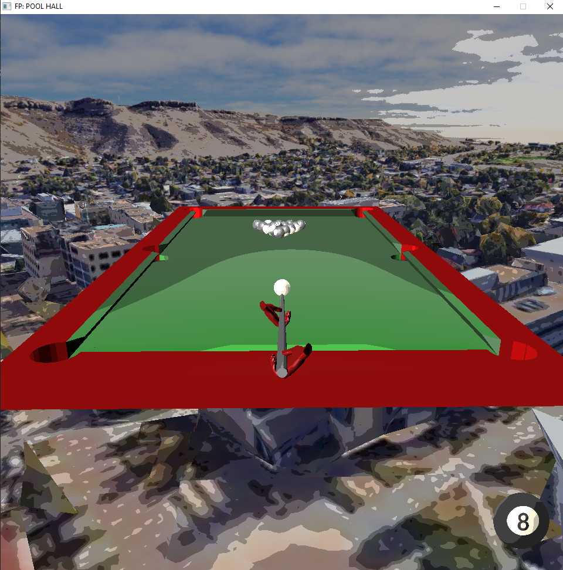 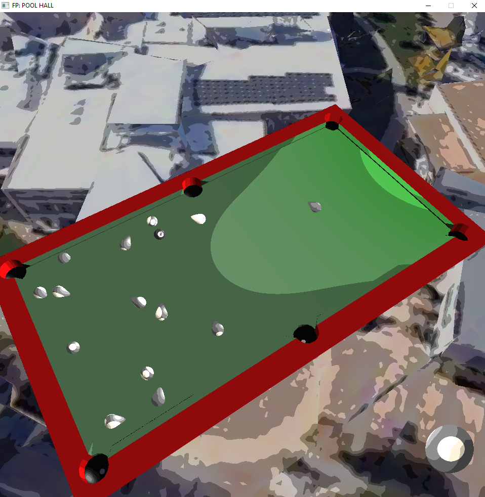 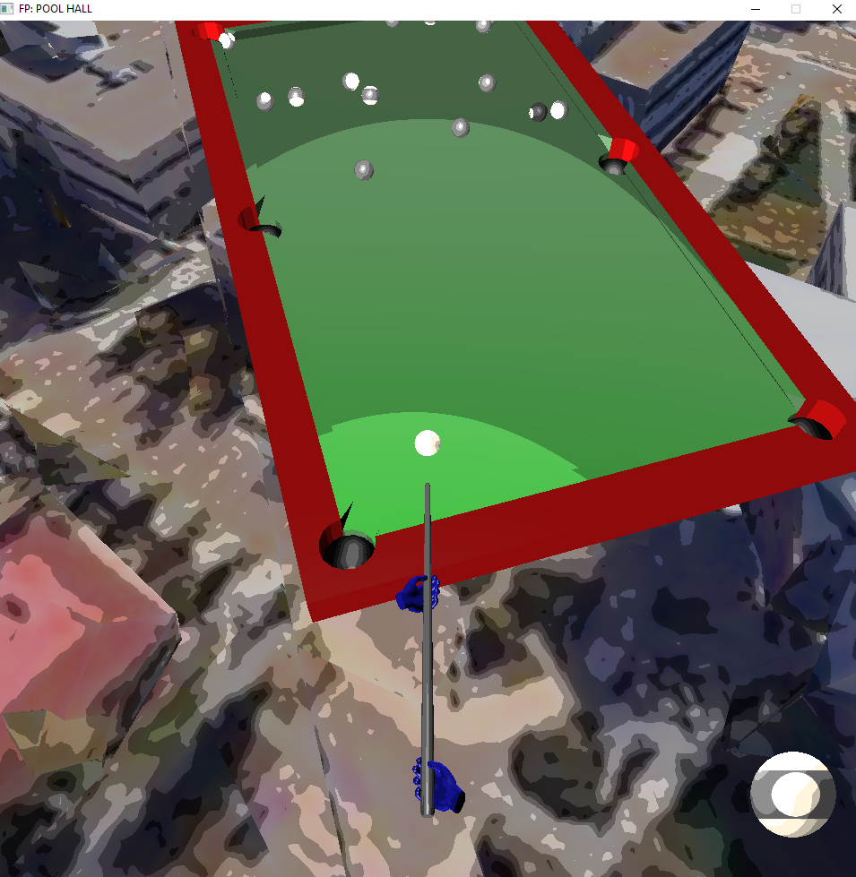 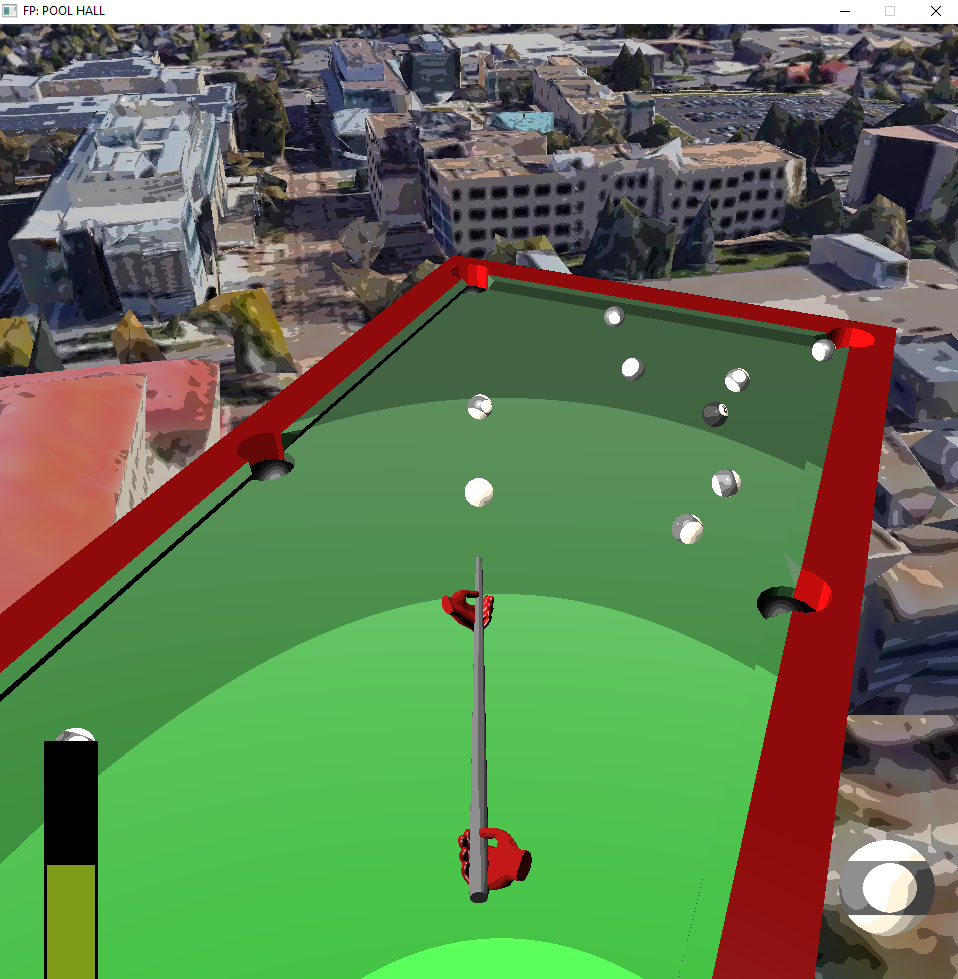 |
My final piece of work for the aforementioned course was a pool game implemented from scratch in a group with two other students. The game has two human players (one with blue hands and one with red hands)
playing pool with a fully implemented rule set. On a given players turn, the ball in the lower right corner shows the type of ball they are trying to sink or the 8 ball when no balls have been sunk.
Additionally, a power meter will appear in the lower left corner when a player is attempting a shot. The whole table can be seen floating above the pedestrian plaza on the Colorado School of Mines campus.
The model for this representation was assembled using Google Maps data.
|
Taking Advantage of OOP |
|
| 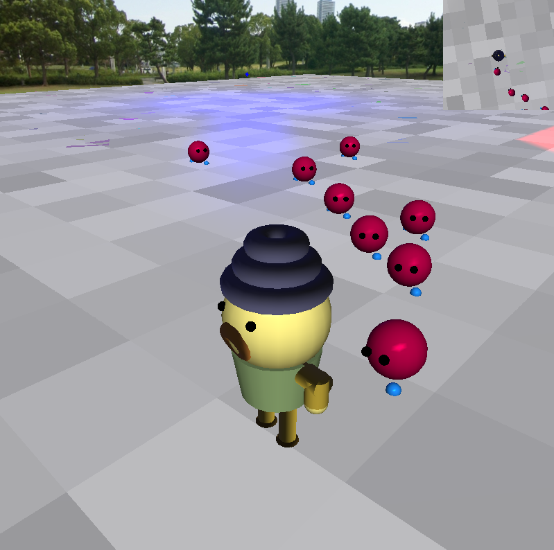 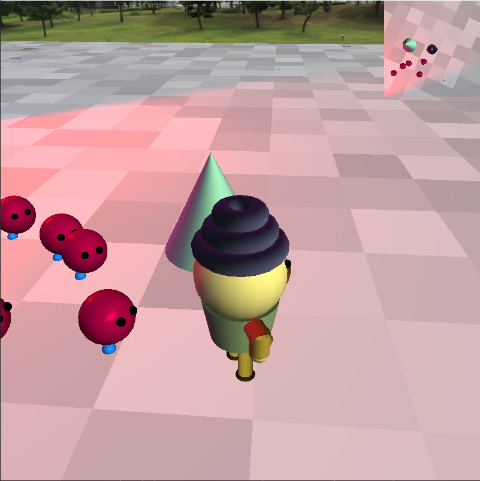 |
Once again expanding on the capabilities of the "Let There Be Light" project below, I created an incredibly basic game. The goal is simply to reach the cone shown in the second picture before any of the little red guys touch you. The red guys were implemented as a form of particle system in the graphical sense. That is to say each of the gremlins handled all of its own interactions, movement, and orientation. As the title suggests, each gremlin is simply an instance of the gremlin class. Each gremlin automatically aligns its heading to face towards the player using vector math and simply moves along it. If two gremlins collide, one of them will get confused and turn around. Once the player reaches the goal cone, all the gremlins disappear and the player can roam freely. Be careful of the edge though! It is now possible to fall off with some very limited physics. |
Bezier Curve Ball |
|
| 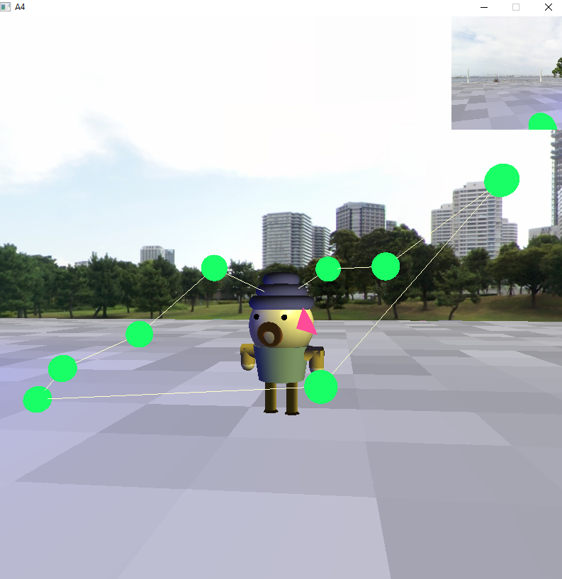 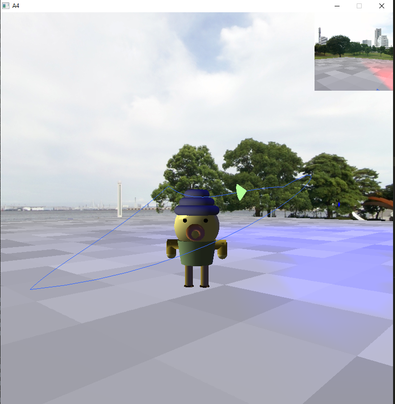 |
Expanding on the capabilities of the "Let There Be Light" project below, I implemented Bezier curve evaluation and rendering within the program. Control point positions for the curve are read in from an external file before being used to calculate a sampling of points along the curve to draw between. Another sampling of the curve is also taken and placed in a lookup table so that the cone which travels along the curve may approximate traveling by total arc length instead of by individual arc completion percentage. As can be seen in the photos above, the user can choose whether or not the curve itself and its control cage are actually drawn. The differing colors of cone represent arc length and arc completion movement modes. |
Let There Be Light |
|
| 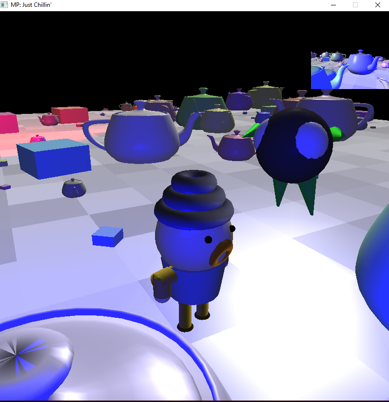 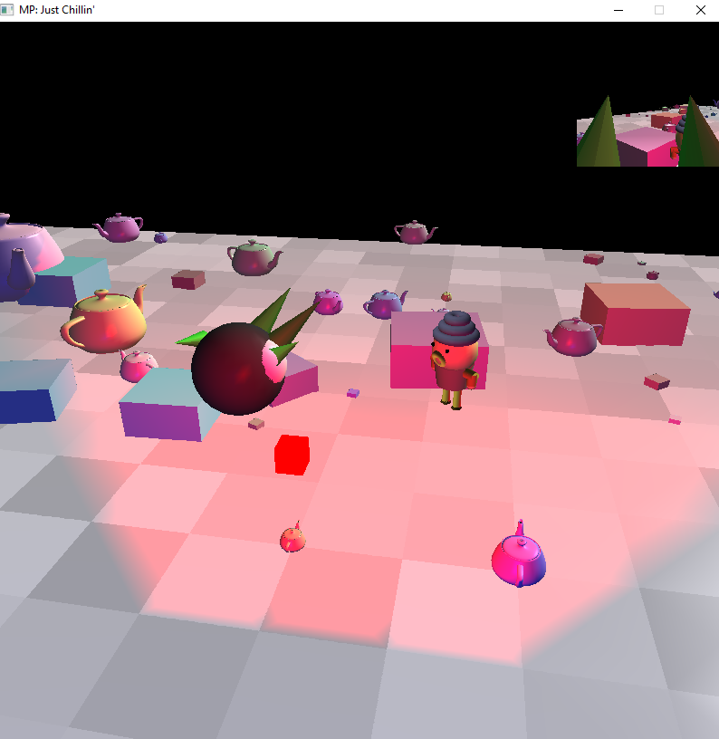 |
As an expansion of the program below, I and two team members worked to expand our 3D graphical capabilities by adding more cameras and advanced lighting. The image on the left is two of our heroes being lit by a blue point light, and the one on the right is those same heroes being lit by a red spot light. Gouraud shading was used to apply the Phong Reflectance model in this simulation, which can be seen in the luster on the background objects. There were certainly some difficulties for amateurs to get C++ code running consistently on very different machines, but it was a very good learning experience for such challenges. |
A Small Scene |
|
| 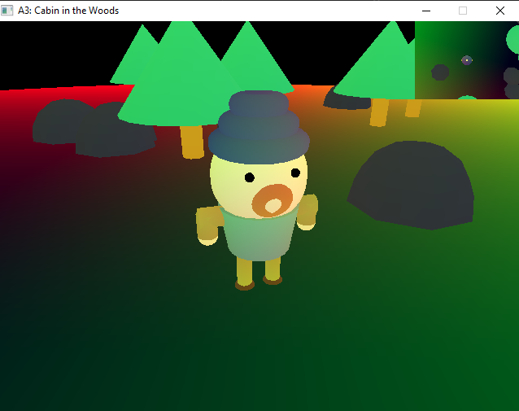 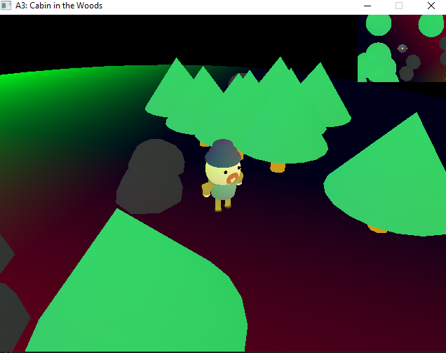 |
This program is a basic step into 3D mathematics and manipulation with OpenGL. This included work with model, view, and projection matrices as well as camera control and evaluation. The program has two cameras: one standard arcball camera in the main viewport and a top down camera in a smaller viewport in the top right corner of the screen. The character could walk around the scene with programmatic animation and both cameras followed him automatically. |
The Very Basics |
|
|
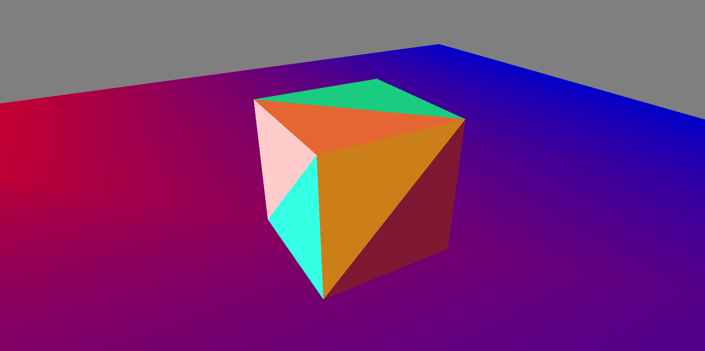
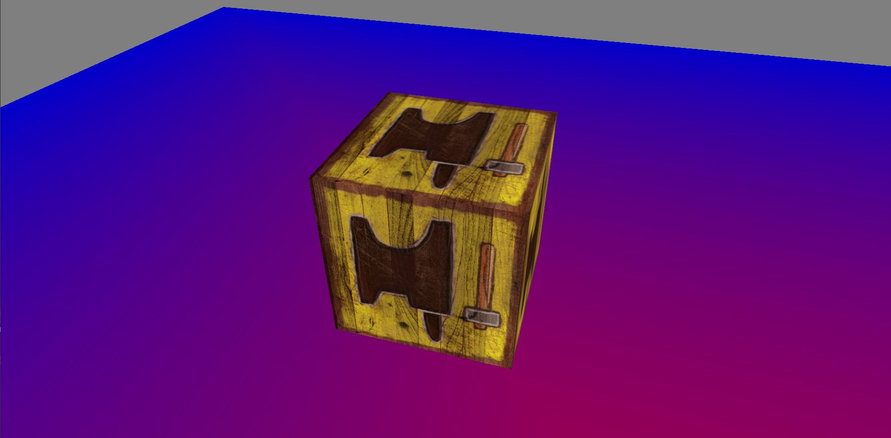 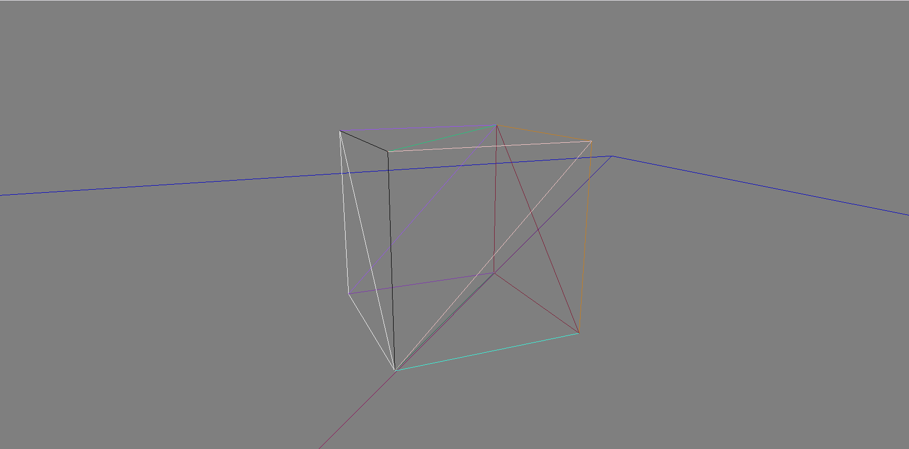 |
As the title suggest, this was the very basics of 3D OpenGL put into action. It is simply a cube with an arcball camera on a colored plane. The cube can be swapped between the solid triangles. a texture, and the wireframe of either of those options. |